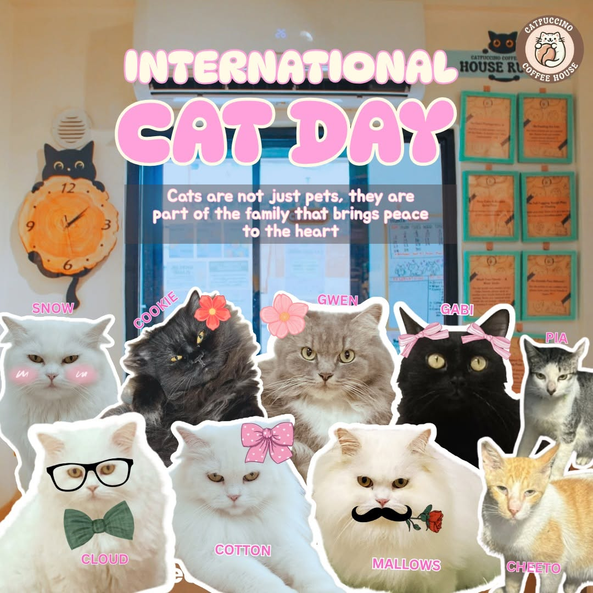

TAGUIG CITY · MOST INTIMATE
Catpuccino Coffee House
Catpuccino Coffee House is my pick for cat lovers who prefer a quiet neighborhood hideaway over a large themed venue. Its smaller scale creates an unhurried visit where guests can enjoy a drink and notice the personality of each resident cat. The caring, personal atmosphere makes it especially appealing for a peaceful catch-up or solo break.
| Address | 1 MRT Avenue, Capistrano Street, Hagonoy, Taguig City |
|---|---|
| Opening hours | Check the café's latest official listing before visiting. |
| Atmosphere | Small, personal, and relaxed |
| Best for | Quiet visits and neighborhood café lovers |